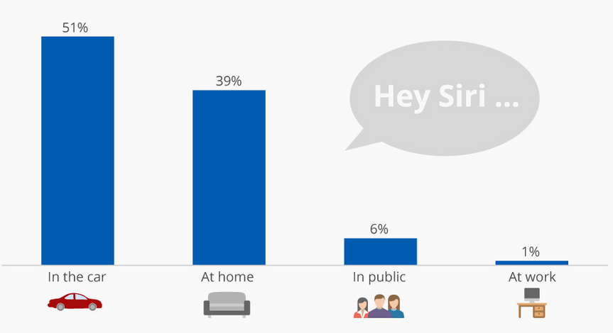

Voice Assistant
TAG
Just Ask!
Use Cases
Make phone calls
Shedule meetings and appointments
Get directions
Set reminders
Ask questions
Where People use Voice Assistants

Source: Creative Strategies
Based on survey of 500 consumers in US
Technologies Used
Natural Language Processing
To understand users speech input
Automatic Speech Recognition
To understand command according to user's input
Artificial Intelligence
To learn things from user and to store all information for future use
Inter Process Communication
To get important information from other applications
In Summary. .
A virtual assistant consists of three layers
Speech to text
Text Analysis
Interpret commands
Deep Learning
Word2Vec
Word Embeddings
RNN, LSTM
Memmory Networks
Udacity
GitHub
Blogs